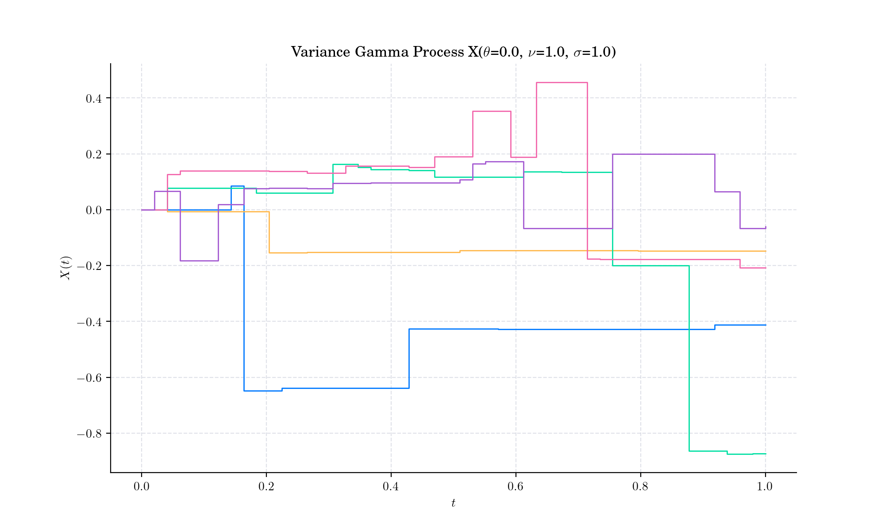
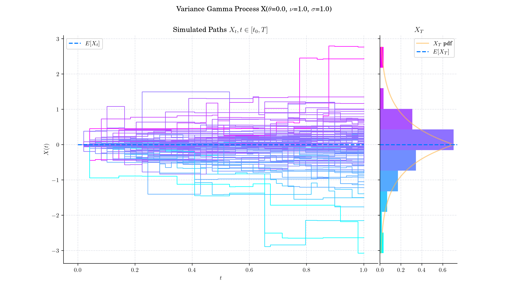
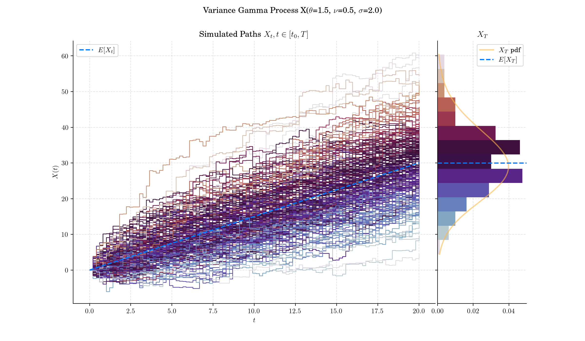
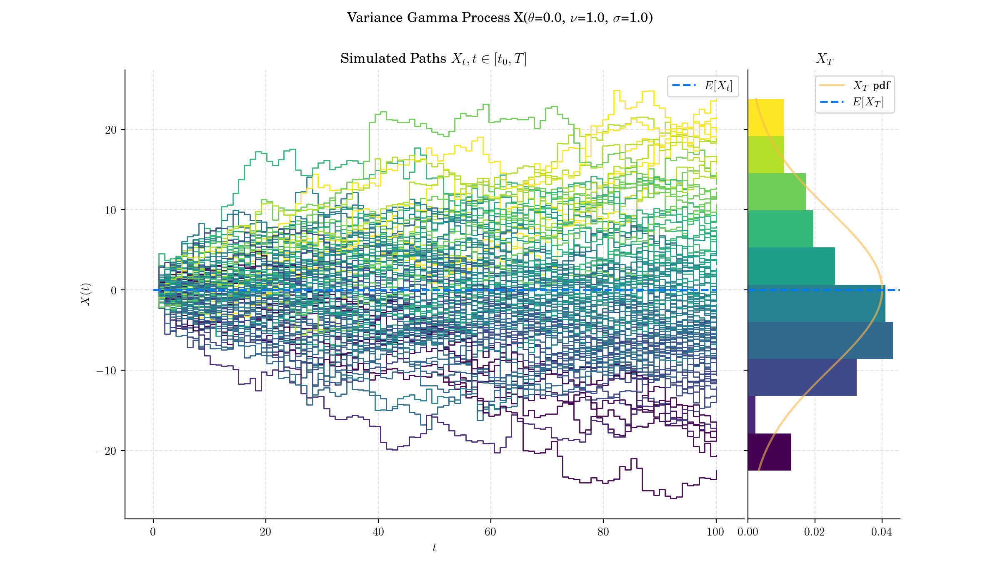
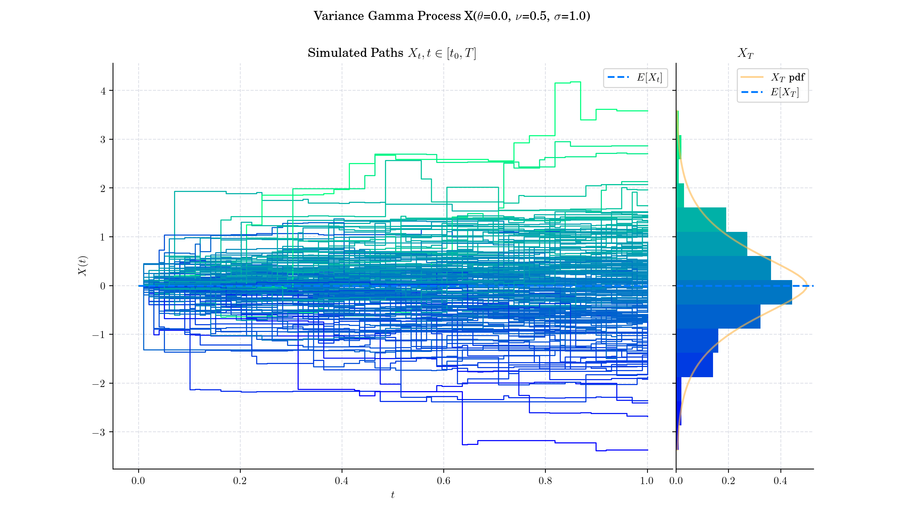

Day 21: Variance Gamma Process#
In the theory of stochastic processes the Variance Gamma(VG) process, also known as Laplace motion or Madan-Seneta process, is a Lévy process determined by a random time change.

Definition#
There are several representations of the Variance-Gamma process that relate it to other processes. It can for example be written as a Brownian motion \(W\) with drift \(\theta t\) subjected to a random time change which follows a gamma process \(\Gamma(t;1,\nu)\), i.e.:
There is no diffusion component in the VG process and it is thus a pure jump process. The increments are independent and follow a variance-gamma distribution, which is a generalisation of the Laplace distribution.

🔔 Random Facts 🔔#
The Variance-Gamma process was introduced by mathematicians Dilip Madan and Eugene Seneta in 1990 as a model for stock price returns. They aimed to address the deficiencies of the Black-Scholes model, which assumes normally distributed returns, by introducing skewness and excess kurtosis into the framework.
Madan and Seneta initially presented the case of symmetric distributed increments (\(\theta=0\)), which was extended to incorporate skewness (\(\theta\in\mathbb{R}\)) by Madan, Carr and Chang who extended the model to allow for an asymmetric form and present a formula to price European options under the variance gamma process.
The Variance-Gamma process builds on earlier work on Lévy processes and time-changed Brownian motions. It became popular in financial modelling due to its ability to fit empirical return distributions better than traditional Gaussian models.
The Variance-Gamma process has finite moments, distinguishing it from many Lévy processes.
The VG process can be advantageous to use when pricing options since it allows for a wider modeling of skewness and kurtosis than the Brownian motion does. As such the variance gamma model allows to consistently price options with different strikes and maturities using a single set of parameters.



More to Read 📚#
Madan, Dilip B., and Eugene Seneta. “The Variance Gamma (V.G.) Model for Share Market Returns.” The Journal of Business, vol. 63, no. 4, 1990, pp. 511–24. JSTOR, http://www.jstor.org/stable/2353303. Accessed 22 Dec. 2024.
Madan, D. and Milne, F. (1991) Option Pricing with VG Martingale Components. Mathematical Finance, 1, 39-55. http://dx.doi.org/10.1111/j.1467-9965.1991.tb00018.x
P.s. If you are curious about probability distributions visit the Advent Calendar 2023 ✨